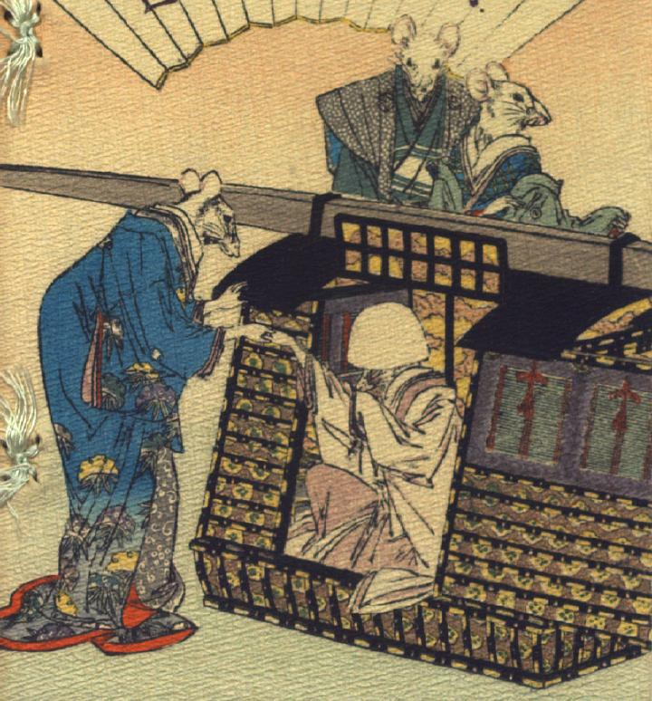

花嫁姿の鼠が駕籠から降りようとしている。付き添いの女の鼠がその手をひいている。駕籠の後ろに、男女の鼠がひかえている。
著作者：J.Dautremer／出典：親書誌：U426_nichibunken_0111：Le mariage de la souris／日付：2006／資源識別子：U426_nichibunken_0111_0001_0000
Copyright (c)2010- International Research Center for Japanese Studies, Kyoto, Japan. All rights reserved.